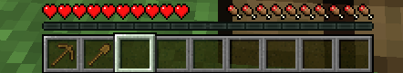
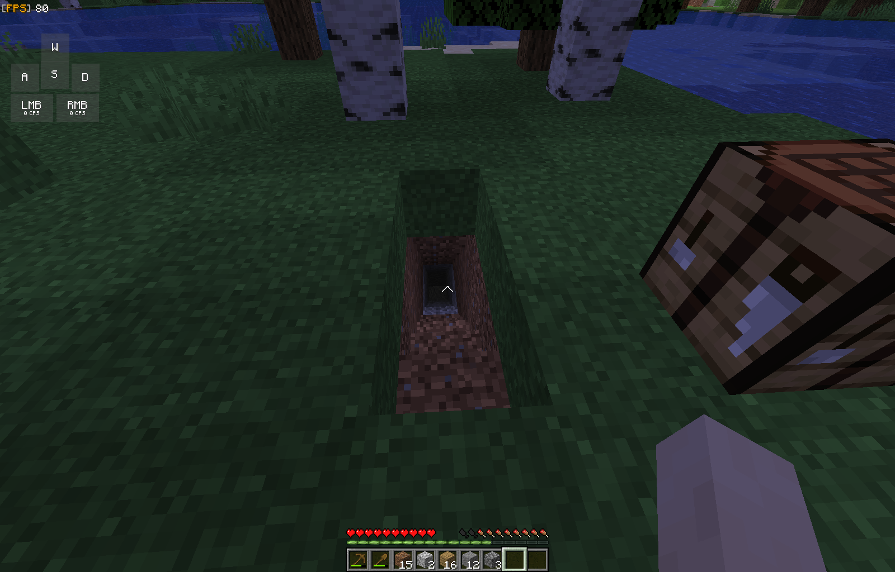

En este articulo encontraras los tips de Minecraft desde lo mas basico, a los mas avanzado, recuerda que si deseas apoyar esta pagina te lo agradecere, esta pagina esta hecha por un solo programador, nuevo en la programacion.
Primero debes de tener en cuenta que Minecraft no es un juego facil, es un juego de concentracion y diversiòn, depende de como veas el juego influye en tu progreso, en este caso, este articulo
se basara en como pasarse en Minecraft de forma rapida, no haremos bases, casas, chozas, etc.
Comenzamos en un mundo normal (dificultad normal) y lo primero que debemos de hacer es romper un arbol, el que tengas mas cercano
, cuando tengas la madera (se recomienda tener por lo menos 14 bloques), debes de abrir el inventario con la tecla asignada (Si no has cambiado ninguna configuracion del juego, la tecla para abrir el inventario es la "E").
De alli debes de colocar la madera en solo 1 cuadro, el cual se encuentra en la parte superior derecha, asi crearas madera procesada
Despues de que craftees la madera debes de hacerte una mesa de crafteo, para eso solo debes de rellenar los 4 cuadros de fabricacion, los cuales son el mismo lugar donde crafteamos madera.
Despues de que termines de craftear la mesa de crafteo la debes de colocar (con click izquierdo, o tecla asignada), le das click y te va a abrir un menu de fabricacion, igual al anterior donde hicimos la madera.
La diferencia del inventario y la mesa de crafteo, es que la mesa de crafteo es mas grande, alli puedes hacer muchos mas objetos, los cuales son escenciales para la supervivencia en el mundo.
Lo primero que debes de hacer es una herramienta de recoleccion, en este caso es el pico o picaxe (en ingles) de madera, y tambien una pala, esta para excavar la tierra y encontrar piedra suficiente para mejorar las herramientas.
Las herramientas de recoleccion se hacen con palos y el material del cual lo quieres hacer, un ejemplo es un pico de madera, el cual se hace con dos palos en los dos cuadros de la mitad, de forma vertical, y tres de madera que crafteamos
anteriormente, de forma horizontal.
Para craftearlos necesitamos los palos, los cuales se consiguen colocando dos de madera en forma vertical, en la mitad del area de crafteo.
en el mismo lugar donde colocamos los palos, en el crafteo anterior
Despues de terminar los crafteos de la pala y del pico, debemos de utilizar la pala para excavar y comenzar a conseguir nuestros primeros bloques. Debemos de cavar una escalera hasta que encontremos piedra, y de alli esa piedra la debemos de recolectar, y asi mejorar nuestra herramienta.
Para excavar la tierra debemos de fijarnos en la barra de objetos que tenemos en la parte inferior de la pantalla, ahi nos colocaremos sobre la pala, o el objeto que vayamos a utilizar.
Despues de que tengas tus herramientas comenzamos con el paso ya dicho, LA EXCAVACION, aqui romperemos con la pala el cesped, asi hasta que lleguemos a la piedra.
Ya alli debemos picar o recolectar 40 de piedra, asi nos haremos herramientas de piedra, como el hacha, el pico, espada, pala, azada.
Depues que terminemos de recolectar la piedra, debemos de hacer los crafteos anteriores, pero reemplazando la madera con la piedra. Asi estaremos preparados para nuestra gran aventura.
Despues de que tengamos nuestras herramientas, debemos de hacer una espada, la cual se hace con 1 palo y 2 del material requerido, en este caso necesitamos piedra. Los dos de piedra vienen en la parte superior de forma
vertical en la mitad, y el palo viene en la columna 3 de forma horizontal, en el cuadro 2.
Cuando lo tengamos, exploraremos nuestro mundo, eliminando los animales para conseguir la comida, y de alli cocinarla en un horno, el cual se consigue colocando
toda la piedra en los 9 cuadros de crafteo, excepto el de la mitad. Cuando tengamos lista la comida, debemos de hacer una cama, para eso debemos de tener lana, la cual la sueltan las ovejas, la cama se hace de la siguiente manera:
Depende del color del color de la oveja la lana suelta de un color distinto, debes de conseguir lana de un mismo color y hacer el crafteo visto anteriormente
Despues de ahi debemos de dormir, y asi pasar nuestra primera noche
Despues de esto solo debemos de ir de mina, y asi, conseguir diamantes y los demas materiales.
GRACIAS POR LEER ESTE POST
Pagina hecha por: JERONIMO TABORDA GAVIRIA